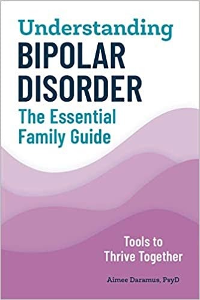

Understanding bipolar disorder, by Daramus
Friday May 17, 2024
This 2020 book is short (149 pages) and kind. With a therapist's tact, it advises stoic behavior (see also: The Enchiridion) and introduces helpful concepts and terminology (like on page 107, "euthymic" means "not having a mood episode right now"). It seems like pretty good guidance for a difficult condition.

There are times when having someone with bipolar live at home with family is no longer realistic, and the person is not ready to live on their own. In that case, a group home might be an option. (page 78)
It Won’t Work Right Away, and Not Everything Will Work (page 91)
Sometimes someone will go off medication without medical supervision. This is dangerous but understandable. (page 94)
Sometimes You Need to Be a Caregiver (page 122)
No matter how stable someone becomes, there will probably be another mood episode eventually. (page 123)
Know the difference between your need to control things and what will actually work. (page 135)
Repeated mood episodes are part of bipolar disorder: expect setbacks. It’s not a disorder that anyone truly gets over, at least not yet. (page 145)